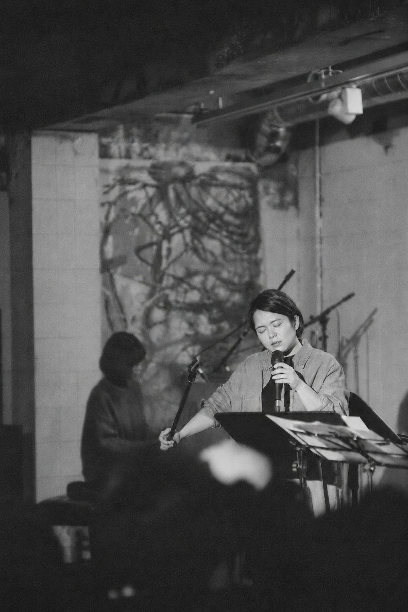

Photo by Yunseon Yi
보컬리스트 이지민은 노스텍사스대학교 (University of North Texas)에서 재즈학과 석사학위(Jazz Studies, MM)를 취득한 후 국내에서 활발한 음악 활동을 펼치고 있다. 창작곡으로 이루어진 앨범들을 꾸준히 발표하며 자신만의 음악 세계를 만들어 나가고 있으며, 안정된 톤과 개성적인 즉흥연주, 재즈에 뿌리를 둔 폭넓은 음악적 스펙트럼으로 다양한 음반 및 공연 프로젝트에 참여하였다.
앨범 《이상한 꽃 Strange Flower》(2019)에서는 전위적 문학가 이상(李箱)의 시를 노랫말로 한 창작곡들을 발표하였다. 이 음반은 미국 재즈 전문지 ‘다운비트(DownBeat)’에 리뷰로 소개되었다. 또한 《Lasting Fragments: 지속되는 조각들》(2014)과 EP 《Circles to Nil》(2015), 《the home remedy》(2022) 등을 통해 동시대의 여러 음악적 스타일을 아우르는 독창적인 음악을 선보였다.
리더로서 이끄는 이지민 퀄텟(Jimin Lee Quartet)은 제19회 자라섬재즈페스티벌(2022)과 EBS 스페이스 공감 <한국 재즈의 오늘 – 한 번 간 길은 다시 가지 않는다>(2018)을 비롯한 여러 음악 현장에서 재즈보컬과 즉흥연주를 축으로 한 개성적인 음악을 만들어내고 있다. 이지민은 또한 국내외 재즈 음악가들의 수많은 창작 프로젝트에도 활발히 참여하고 있다.
Jimin Lee is a vocalist, composer, and educator based in Seoul, South Korea.
Jimin earned a Master of Music in Jazz Studies (Vocal Performance) from the University of North Texas in 2013. While working as a Teaching Fellow at UNT, she actively performed in the Dallas/Ft. Worth area, collaborating with other musicians and releasing recordings, including a duo project titled "Somewhere Safe" (2014).
After returning to Seoul, Jimin released her debut album, “Lasting Fragments” (2014), recorded with fellow musicians in the US, followed by the EP “Circles to Nil” (2015), her second full-length album, “Strange Flower” (2019), and the EP “the home remedy” (2022). Across these releases, her original compositions draw on jazz and a wide range of contemporary musical styles. “Strange Flower” sets poems by Korean avant-garde writer Yi Sang to music across ten original compositions. The album received favorable reviews in Korea and was also reviewed in DownBeat.
Jimin leads the Jimin Lee Quartet, performing original music at concerts such as the 19th Jarasum Jazz Festival and on programs such as EBS Space GongGam. She has been singing standard jazz repertoire with some of the finest jazz musicians in Korea and creating a diverse range of music for albums and live performances.
the home remedy
Bandcamp ↗이상한 꽃 (Strange Flower)
DownBeat Review ↗Circles to Nil
Bandcamp ↗Lasting Fragments
CO-LEADER

Somewhere Safe (2014) by Ronan Delisle and Jimin Lee